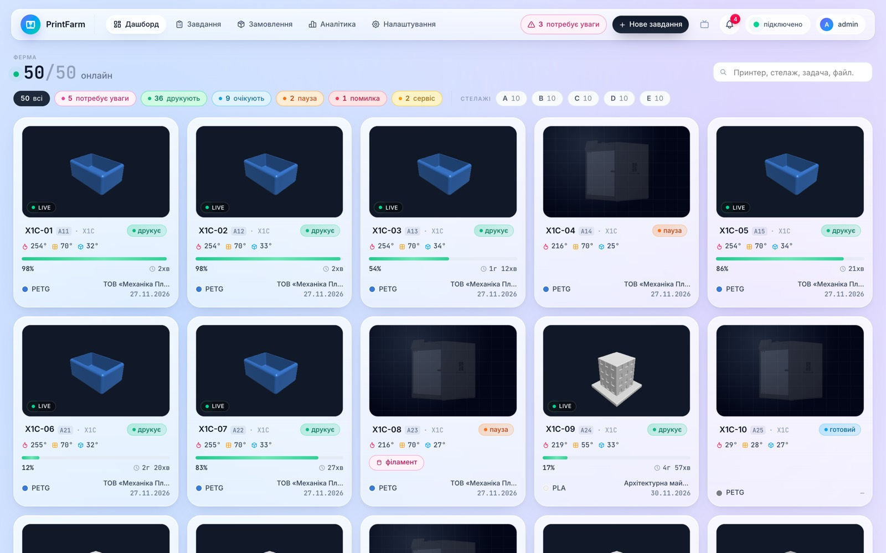

Уся ферма 3D-друку — в одному вікні
Веб-система для виробничої ферми 3D-принтерів: десятки машин різних брендів, задачі, замовлення й аналітика в одному інтерфейсі. Працює в локальній мережі ферми, без хмари виробника.

Для кого
Фірмові програми виробників розраховані на кілька машин одного бренду. Коли принтерів десятки, а парк змішаний, оператор розсилає файли по черзі, обходить принтери, щоб побачити помилку, і веде облік у таблиці. PrintFarm прибирає цю ручну роботу.
Один оператор — десятки принтерів
Файл розсилається й запускається на вибрані принтери автоматично, групами з інтервалом, щоб не перевантажити електромережу.
Проблеми видно одразу
Помилка, пауза, закінчився філамент, принтер зник з мережі: картка підсвічується, приходить сповіщення з кодом місця на стелажі.
Облік без таблиць
Кожен друк прив'язаний до задачі, замовлення й клієнта. Пластик і години рахуються автоматично, звіти вивантажуються в CSV.
Незалежність від бренду
Bambu Lab, Klipper-принтери (Creality, Qidi) і Prusa в одній системі. Новий бренд додається драйвером, без переробки інтерфейсу.
Створено на реальному виробництві
PrintFarm щодня керує діючою фермою з десятків принтерів Bambu Lab. Тому система розрахована на те, що в цеху неминуче: обриви мережі, перезапуски, перебої зі світлом, неповні дані від принтерів. Облік поточних друків після перезапуску продовжується, а друк не піде на зайнятий принтер чи принтер на обслуговуванні.
Стан проєкту. Система безкоштовна. Основний перевірений парк — Bambu Lab. Що працює, а що ще ні, описано чесно на сторінці «Що працює». Пакет для встановлення поки видається за запитом, див. «Як отримати».
Розділи сайту
Можливості →
Дашборд, задачі, замовлення, аналітика, камери, сповіщення — зі знімками.
Встановлення →
Покроково: пакет для Linux, перший вхід, додавання принтерів.
Обслуговування →
Журнал, оновлення, бекапи, забутий пароль, зміна IP принтерів, типові проблеми.
Що працює →
Що перевірено, що обмежено, що не перевірено на залізі.
Плани →
Що робимо далі і в якому порядку.